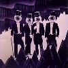

strange music page
overesas * * * etc...
|
#その他イロイロ、どーもジャンルの括りを思いつかなかったよーな。
|
- John Fahey
- Die Knodel
- rene aubrey
- ZNR
- Pascal Comelade
- Residents
- v.a.
|
- The Yellow Princess
- View (East From The To Of The Riggs Road/B&O Trestle)
- Lion
- March! For Martin Luther King
- The Singing Bridge Of Memphis, Tennessee
- Dance of The Inhabitants of The Invisible City of Bladensburg
- Charlie A. Lee: In Memoriam
- Irish Setter
- Commemorative Transfiguration and Communion at Magruder Park
- John Fahey (guitars)
- Jay Ferguson (organ,piano)
- Mark Andes (bass)
- Matt Andes (gutiars)
- Kevin Kelly (drums)
KING RECORDS: KICP-773 (2001.3.7)
VANGURD RECORDS: (1969)
#Die Knodelの中でコレが一番好きです。室内楽の編成でポップスだったりプログレだったり、綺麗な女性ボーカルも有るし。なんていうかツボを押さえていて、全然聞き飽きません。ジャケもイイですね。
なんだかチロル地方の民謡とかの要素が入ってるらしいんですけど、とにかく軽快でカワイイ曲が集まってます。このページ辺りだと前衛だったり暗かったりしてとっつきにくいCDが多いですけど、これは誰でもOKと思います。
- Die Wurst (Die Noodle!)
- Roll & Rockkragen
- Chinese Lanterns
- Es Wa Enimal Im Erdbeerland...
- Fast Food In A
- Noticknotock
- Seifenblasen Im Mondschein
- Muischka
- Big Rape
- Dschungellied
- Eine Kleine Zugabe
- Christof Dienz (fagotto,hackbrett)
- Alexandra Pedarnig (bass)
- Michael Ottl (guitars)
- Julia Fiegl (violin)
- Walter Seebacher (clarinet)
- Cathi Aglibut (violin,viola)
- Andreas Lackner (trumpet,flugelhorn,bass)
- Margret Koll (harp)
- Christoph Moser (organ)
- Christian Koll (clarinet)
- Josef Seeber (trumpet)
RECREC MUSIC: RECDEC-64 (1995)
- Ab in die Ferien
- Fahr' ma ab - Polka
- Duduradu
- Oberlandler
- Der Xenomorph
- Flaschenachter
- Knodel mit Kraut
- Holzhuttenpolka
- Scarlatti labt gruben
- Ein Stuckerl von Dahoam
- Riddlesnake
- Fasnachtpolka
- Gerostete
- Ein Walzerle fur die Knodel
- Gauteng
- Alexandlra Pedarnig (contrabass,vocals)
- Christof Dienz (fagotto)
- Julia Fiegl (violin)
- Michael Ottl (guitar,vocals)
- Cathi Aglibut (violin,viola,vocals)
- Walter Seebacher (clarinet)
- Margret Koll (harp)
- Andreas Lackner (contrabass,trumpet,flugelhorn)
- Christoph Mose (organization)
RECREC MUSIC: RECDEC-74 (1995)
#えーと何故かAmy Denioの曲を演奏してます。俺、オリジナルの曲のほうが好きなんだけどな....
- Cervello Asonagli
- Benevolent Ears
- Agora
- Memories Dissolved
- Ambaraba Ci Ci Co Co
- Berenice
- Whistling Song
- Long Song
- Non Lo So, Polo
- Finalala
- Alexandra Dienz (bass,hackbrett)
- Christoph Dienz (fagotto)
- Julia Fiegl (giege,holzernes glachter,vocals)
- Margreth Koll (harp)
- Cathi Aglibut (bratsche,vocals)
- Walter Seebacher (clarinet,bass clarinet,hackbrett)
- Michael Ottl (guitars,vocals)
- Andreas Lackner (trumpet,flugelhorn,bass,vocals)
- Amy Denio (accordion,vocals)
- Jeannette d'Armand (vocals)
- William Dean (vocals)
- Jenn Brandon (vocals)
MAKE UP: MAKE-5 (1998)
#フランスの....人みたいです。クレジットに 「pour le film "Minoush"」とか書いてあるから、映像音楽の人なのかな？詳しくは
http://www.hopimesa.com/から...フランス語ですけど。
室内楽たいなのとか、ちょっと民族音楽っぽい音とか。サンガツにも通じるようなギターのシーケンスとかが気持ち良いです。ちょっと弦楽器の音が多すぎるよーな気もしないでもないけど。
映像の方は全くナゾなんですけど、ジャケットみたいな紙アニメとかを勝手に想像してたりします。昔見た「ファンタスティックプラネット」みたいなヤツを。あれもフランスだったかな？(2001.11.1)

- Inivtes sur la terre
- Noel aux Balkans
- Soleils
- Brimade legere
- Matera
- D'un pas si facile
- Sept guitares
- Frenesie
- Les bles en feu
- Solitaire
- Sette bello
- Pauvre Juliette !
- Toumelune
- Vodka m'interesse
composed by Rene Aubry
- Rene Aubry (guitars,bouzouki,harmonica,mandolin,accordion,banjo,balalaika)
- Didier Havet (tuba)
- Damien Verherve (trombone)
- Thierry Caens (trombone)
- Stefano Genovese (piano)
- marc Buronfosse (contrabass)
- Nicholas Walker (contrabass)
- Jean-Marc Ladet (violin)
- Antoine Banville (percussions)
- Marc Berthoumieux (accordion)
- Marco Quesada (guitars)
- Lucien Zerrad (guitars)
- Daniel Beaussier (bass clarinet)
Hopi Mesa: 3070972 (2001.10)
#これはかーなり前に聴いて(お茶の水のJANISというレンタル屋で借りた)めちゃめちゃ気に入ってたんですけど、CDでは持ってなかったので買いなおしちゃいました。J.Racailleの綺麗なピアノにH.Zazouのえげつない電子音がかぶる実験系室内楽なんですが、このぱっと聴きほのぼのしてる中の毒がたまらなく好きです。自分の中でも1,2を争うほど好きなCDです。(この後のZNRよりも好き)

- Espelisoun d'uno ribambello d'evenimen espetaclous valentin bilot
- Armistice couronne de feuillages
- Le grande compositeur vu de face
- Seynete
- Editioun especialo d'uno griho
- Annie la telie
- Navie description de la formation d'un sentiment
- Avrile en suede
- Proumier assai per s'amourousis d'un moustre
...sera suivie de biens d'autre
prelude aux memories d'un chien
premiere tentative
- trop de douceur ou les trois soeurs: 2eme soeur
- l'amouire
...devait faire partie d'une trilogie intitulee
'trois rayons de lune en plein jour'
- le grande compositeur vu de dos
boston mexicain no.1
boston mexicain no.2
boston mexicain no.3
- la pointe de tes seins est comme un petale de pavot
1er movement: lento suivi d'adagio
2eme movement: mezza, mezzo
3eme movement: dente
- solo un dia
d'apres un poeme de meng chiano, fin de la dynastie
t'ang adapte par wayne hutton et hector zazou
pour les passages en langues etrangeres
- la vieio mostro: part 2
- Joseph Racaille (piano,arp 2600 synthesizer)
- Hector Zazou (arp synthesizer,VCS3,bass,piano,violin)
- Patrick Poportella (bass clarinet
- Andre Jaume (soprano sax,tenor sax)
- David Rueff (alto sax)
- Harvey Neneux (guitars)
- Gilly Bell (arp synthesizers)
- Fernard D'Arles (percussions)
ReR: ZNR1 (original release 1976)
#2枚目、邦題「一般機械学概論」。私は1枚目の方が好きですけど、このアルバムも結構気に入ってます。
- ancien automate mexicain
- ecorcherie romantique pour ceur fele
- enchevetrement desordonne
- alia lasse
- la vieille montre
- tout debout
- printemps au jardin potager vu d'en haut
- triste prose et vieux billards
- garden party
- chanson triste pour faire danser les petites filles
- nu au bain
- serenades italiennes
- trou de ble
- vielle chanson irlandaise
- memorie d'un chien
- un veritable monstre a musque
- printemps au jardin potager vu d'en bas
- deux pieces elementaires pour piano et un prelude
- le fils du grand compositeur
- Hector Zazou (synthesizers,bass)
- Joseph Racaille (piano)
- Harvey Neneux (guitars)
- David Rueff (sax,flute)
- Manfred Le Lalo (sax,clarinet,bandoneon)
- Mme Louize Alcazar (arrangements)
- September Song (with Robert Wyatt)
- Signed Curtain
- Come prima
- The Sheik of Araby
- 24 mila baci
- Knockin' on Heaven's Door
- L'italiano
- Pascal Comelade (piano,accordion,ukulele,organ,melodica)
- Robert Wyatt (voice,trumpet,percussions on 1.)
- Patrick Felices (bass on 3.5.)
- Richie Faret (harp on 5.)
#近所の中古屋さんにて購入、とりあえず
謎の集団レジデンツです。初めて聴いたんですけど「エスキモーの音楽から現代文明を批判する・・」って嘘だろ。
だって

だからなぁ・・・
まぁ何やら「ビューーーーー」とか言う寒そうな音と、「ドンチャッ・ドンチャッ」ってインチキ民族音楽。
Der Planとかにも通じるモノが有るかも。
なんかラス近くの心休まるよーな、電子音は気持ちイイですけど。うーんどこがイイとか悪いとか言うより、こーゆーアホなのが許せるかそうでないかで全て決まるような音楽。(2003.1.13)

- The Walrus Hunt
- Birth
- Arctic Hysteria
- The Angry Angakok
- A Spirit Steals a Child
- The Festival of Death
East Side Digital: ESD-81272 (original release 1979)
#メンツをゆっくり眺めて見ましょう、一人は知ってる人がいるはず。
- ollie halsall and john halsery/Bum Love
the residents/We're a Happy Family/Bali Ha'l
roger mcgough/The Wreck of the Hesperus
morgan fisher/Green and Pleasant
john otway/Mine Tonight
- pete challis and phil diplock/My Way
robert wyatt/Rangers in the Night
stinky winkles/Opus 5
mary longford/Body Language
andy "thunderclap" newman/Andy the Dentist
david bedford/Wagner's Ring in One Minute
- fred frith/The Entire Works of Henry Cow
maggie nicols/Look Beneath the Surface
joseph racaille/Week-End
the work/With Wings Pressed Back
neil innes and son/Cum on Feel the Noise
- herbert distel/Toscany in Blue (Last Minute)
lol coxhill/An End to the Matter
ken ellis/One Minute in the Life of Ivan Denisovich
steve miller/Alice
- norman lovett/John Peel Sings the Blues Badly
patrick portella/Serrons Nous Les Coudes
george melly/Sounds That Saved My Life (Homage to K.S.)
robert fripp/Miniature
andy partridge/The History of Rock'n'Roll
phantom captain/Breather
- ron geesin/Enterbrain Exit
alejandro vinao/An Imaginary Orchestra
quentin crisp/Stop the Music For a Minute
simon desorgher/Tetrad
ralph steadman/Sweetest Love (Lament After A Brocken Sashcord on a Theme of John Donne)
r.d. laing and son/Tipperary
- trevor wishart/Beach Double
john white/Scene De Ballet
ivor cutler/Brooch Boat
hector zazou/Do Tell Us
michael bass and ellen tenenbaum/A Miniaturisation of Bartok's Sonata for 2 Pianos & Percussion (3rd Movement)
- martin chambers/A Swift One
bob cobbing and henri chopin/Refreshment Break
dave vanian/Night Touch
metabolist/Racing Poodles
- gavian bryars/After Mendelssohn
1/2 japanese/Paint it Black
simon jeffs/Arthur's Treat
mark perry/Talking World War III Blues
michael nyman/89-90-91-92
- david cunningham/Index of Ends
kevin coyne/James, Mark & Me (In the Manner of Tom Waits)
etron fou leloublan/Hep!
neil oram and ken cambell and the science fiction theatre of liverpool/The Minute Warp
pete seeger/Chorale From Beethoven's 9th Symphony
- One Minute Silence
- The Miniatures Miature
Voiceprint: VP159CD (original release 1980 - Pipe Records)